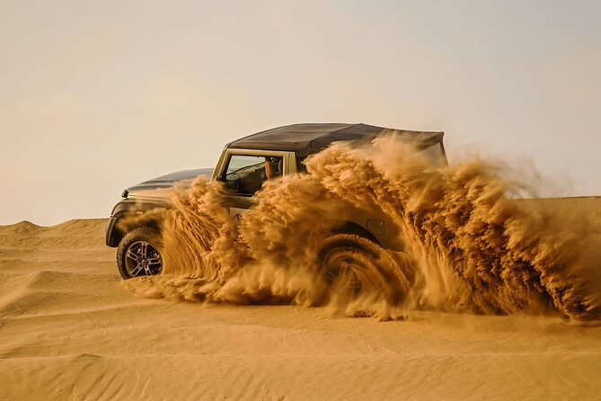
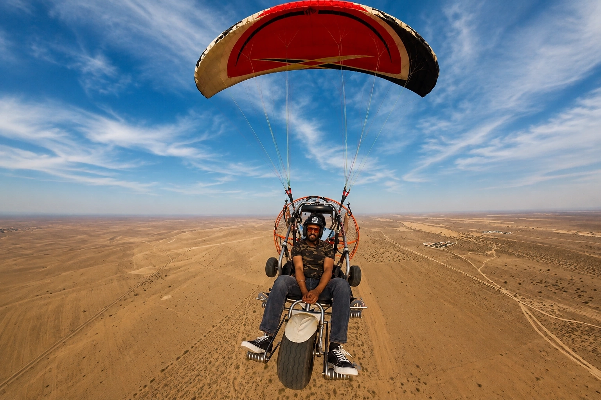
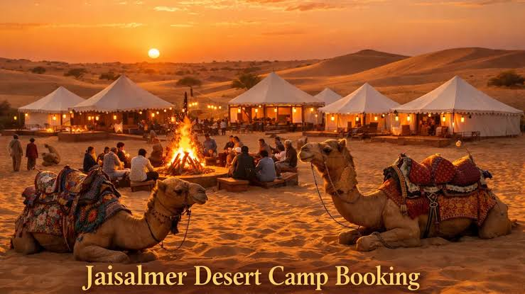

About Jaisalmer
Rising dramatically out of the heart of the vast Thar Desert in Rajasthan, Jaisalmer is known as the Golden City due to its sandstone architecture. Beyond its historic fortresses lies an expansive, wind-scoured wilderness of shifting dunes and stark arid planes. For adventure seekers, it serves as India's premier arena for extreme off-road driving, remote camel trekking, and deep desert tactical survival.
The Vibe
Jaisalmer carries an intensely atmospheric, raw frontier energy. The endless silence of the empty desert horizons is occasionally charged by the roar of high-powered 4x4 engines scaling vertical sandy crests. It is a space designed for open skies—where hot, wind-whipped days of wilderness exploration fade into freezing desert nights spent around open campfires under a completely clear dome of stars.
Epic Adventures to Try

Extreme 4x4 Dune Bashing
Strap into custom, high-clearance off-road vehicles to conquer the massive, shifting ridges of the Sam Sand Dunes. Experience high-speed drifting across steep vertical sandy crests.

Thar Desert Quad Biking
Command high-powered ATVs to blast across open desert plains and navigate tight, sandy switchbacks. Tear up natural sand ramps in an unmonitored off-road playground.

Aero-Desert Paramotoring
Take flight in a motorized paraglider trike driven by a powerful propeller engine. Soar high above the geometric patterns of the sand ripples for an elite bird's-eye view of the Thar.

Deep-Desert Wilderness Camping
Trek deep into non-commercialized dunes via camels to pitch isolated mobile tents. Experience extreme temperature drops and capture crisp, distortion-free cosmic star tracking.
Useful Information
- Best Time for Action: October to March when daytime temperatures are bearable for outdoor tracks and sports; completely avoid summer months due to extreme lethal heat.
- Hydration Logistics: The desert air is intensely dry and saps moisture rapidly. Always carry at least 4–5 liters of backup water rations during deep dune exploration runs.
- Extreme Thermal Shifts: Desert sand loses heat instantly after sunset. Temperatures drop rapidly from warm afternoons down near freezing at night; carry thick technical winter layers.
- Navigational Safety: The open dunes look identical and phone signals vanish entirely past the buffer roads. Never head out into the deep Thar tracks without local tactical guide tracking gear.